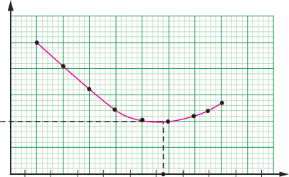
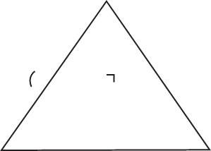

Angle of minimum deviation of a prism
The value of the angle of deviation depends on the angle of incidence, . As the angle of incidence increases, the angle of deviation decreases to a minimum value called angle of minimum deviation (), and then starts to increase again as shown in Figure 5.13.

At the angle of minimum deviation, the angle of incidence and the angle of emergence are equal. That is, . At the angle of minimum deviation, the refracted ray from the first surface travels through the prism perpendicular to the bisector of the apex angle as shown in Figure 5.14.

Consider triangle ABC in Figure 5.14.
The sum of internal angles is
But we know that at a minimum angle of deviation, , then Equation (6) can be written as,
Now consider triangle GEF
But,
By simplifying you get,
This becomes,
This becomes,
Therefore,
Consider the first surface, by Snell’s law